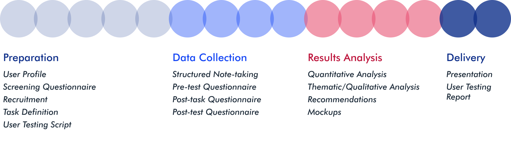
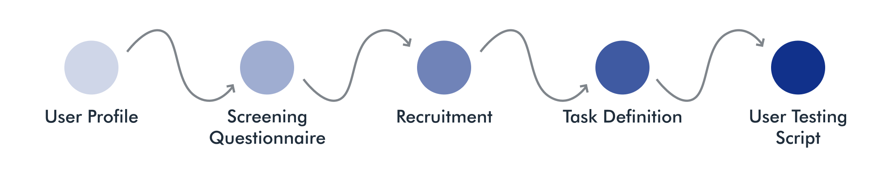
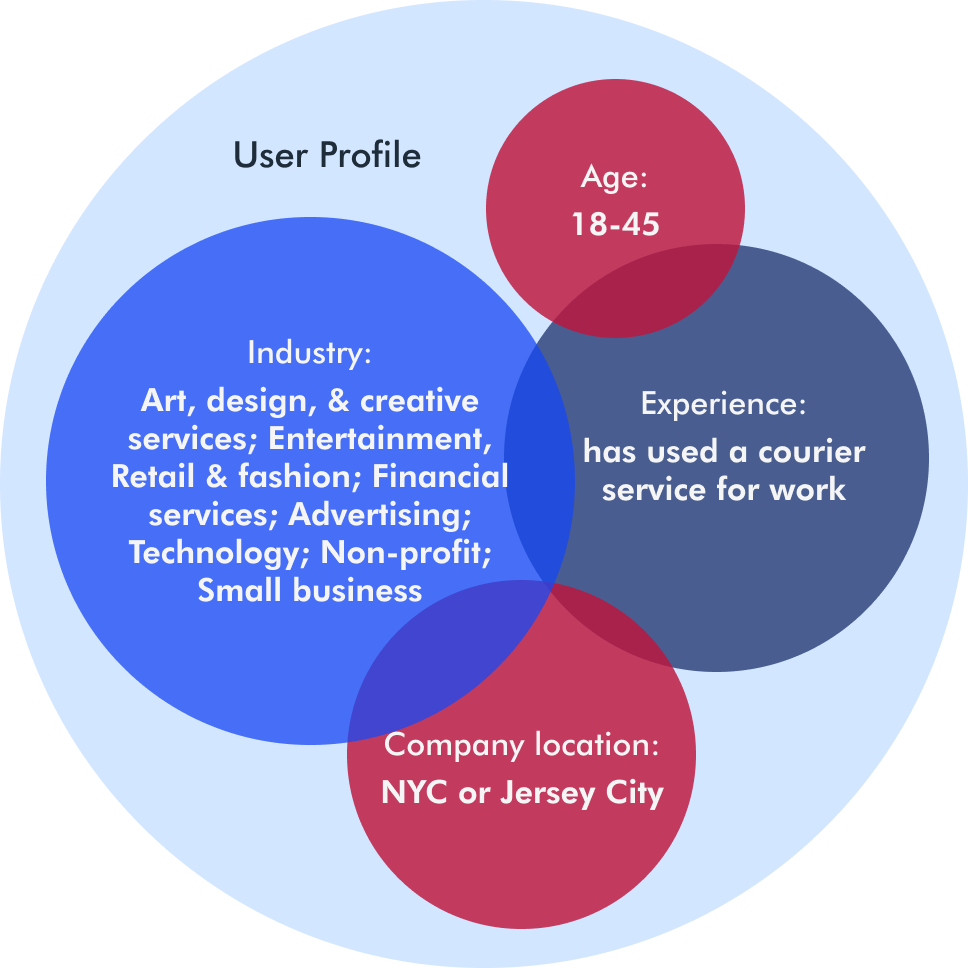
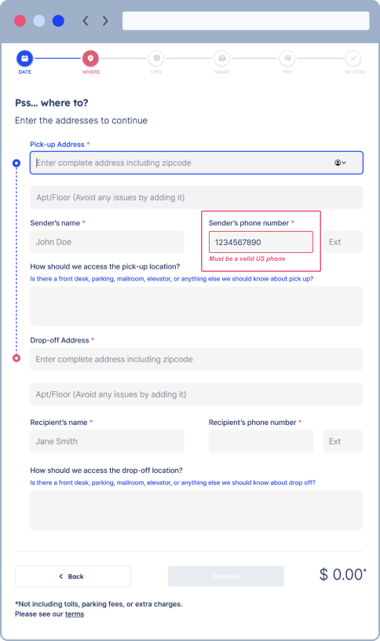

. Design / Research & Evaluation / Airpals Usability Study .
Optimizing the Order Flow of a B2B Courier Startup
Airpals is a B2B courier service startup in NYC, for NYC professionals. The company aims to provide a friendly and efficient service, of which their website is the primary touchpoint. Utilizing moderated remote user testing methodology, this project evaluates the usability of Airpals’ order flow to gather user feedback to inform recommendations for improvement. Participants rated the overall user experience positively, but 6 solutions to usability issues are identified and illustrated in this study.
When: March-May 2023
My Role: questionnaire development, moderated remote user testing, note-taking, quantitative data analysis and visualization, thematic analysis, writing, mockups, communicating findings
Teammates: Lalita Chavan, Priyanka Jain, Anne Kuo, Sara Sarmiento
Project Goal
Evaluate the usability of the Airpals website's order flow and gather user feedback to inform recommendations for improvement.
Our Process

The four stages of our process are preparation, data collection, results analysis, and delivery. Each stage utilized different methods and yielded a series of deliverables that ultimately led to a total of 6 usability recommendations.
About the Client
Airpals is a B2B courier service in New York City. As a relatively new startup, the company is still striving to expand its user base and improve its service and interface functionality. Their website is the primary touchpoint for users to submit an order for parcel pick-up and drop-off, meaning a seamless website experience is crucial. With the competitive and fast-paced market in NYC to consider, Airpals is invested in providing an efficient courier service to its customers.
What are the known pain points?
During our kickoff meeting with the Airpals team, it was communicated to us that the order flow is central to their digital platform experience. Known pain points were shared with us, most notably that many customers refrain from adding instructions for pick-up and drop-off, both of which are key to getting a parcel from point A to point B: they make the delivery person’s job of transporting a parcel through the chaos of NYC easier, therefore impacting the entire shipment experience. Keeping this big picture in mind along with the pick-up and drop-off details on the order form, we began preparations for the usability study.
Preparation: Designing a Moderated Remote Usability Study
Goal: Understanding Airpals' target users for the study and scoping a feasible test

Recruiting the Target Group
As a B2B service, Airpals users are primarily business operational professionals, with a focus on those in creative industries. Using customer analytics, personas, and other materials provided by the client, we developed two target user profiles for recruitment and a questionnaire to assess the fit of potential participants. Recruitment strategies included personal contacts that fit the user profiles and social networks to reach a wider audience.

Challenge: Scripting an Order
Remote user testing was preferable for this study due to the remote nature of submitting an order at work, and the busy work schedules of our target users. As the central experience of the Airpals website, the order form composed the primary task that participants would be required to complete during testing:
Locate and complete the order form to send a package to me with delivery on the next business day. Think about the last package you sent or one that you've sent before when filling out the form details.
Once the task was determined, our team faced the challenge of how to simulate the ordering experience without providing too much guidance to participants. Because the tests were to be conducted within Airpals' testing environment, it was necessary to provide users with fake credit card and log-in information. We also needed to provide drop-off and recipient information, and have pick-up and sender information at the ready in the case that a participant wanted to keep their own address and phone number private. With us acting as moderators and recipients during the tests, we were able to strike a balance between providing necessary information and avoiding an excess of guidance.
Data Collection: Adapting to Findings
Goal: Observing participants and gathering their feedback in an organized way to inform future usability recommendations
Challenge: Adjusting to a Representative Sample
As we gathered information about our participants during testing, it became apparent that some were not an ideal fit for the user profiles we initially defined. We recruited and tested 11 participants, but 3 did not have experience with courier services, which was a requirement for our study. We believe this is a result of a vaguely worded question in our recruitment questionnaire: Do you ever need to send things or have things delivered to you via a third party service within NYC for work? Some interpreted this to mean sending materials digitally, which in itself does not qualify a participant.
We ultimately removed the data from those participants that did not fit the target group, leaving us with a total of 8 sessions to inform our findings and recommendations. The demographics of these 8 participants are shown below:
Overall Impressions of Airpals
Each of our moderated remote usability tests were conducted with Zoom and lasted around 30 minutes each. One teammate moderated a test while another used a pre-made form to take structured notes for later analysis. Within our moderator testing script, we embedded verbal and textual questionnaires to gather participant feedback on both usability and user experience, which would supplement the think-aloud method and our own observations of their actions and reactions.
What were their use cases?
Our verbal pre-test questionnaire gathered more details about a participant's type of work, industry, company, and experience with courier services in addition to what we learned during recruiting. This gave us a broader context for participants' needs and use cases for courier services. Our participants had sent a range of items and parcels before, including:
How did participants feel about their experience?
A mix of verbal questions and textual questionnaire forms, the post-task and post-test questionnaires collected additional details about a participant's thoughts, feelings, and overall impressions of the order flow and their experience with Airpals. We probed them about their actions and asked them to elaborate on anything they verbalized during their completion of the task not only to get a general sense of how the website performed, but also to reinforce analysis and recommendations.
The interface performed well, as reflected by participants' questionnaire responses. 89% of participants were satisfied with the amount of time that it took to complete the form, and 75% enjoyed using the Airpals interface. These findings signaled that, overall, the website was functional and participants had a positive experience. Yet the quantitative data does not demonstrate the whole picture, as usability obstacles were uncovered by the qualitative user testing data discussed below.
Goal: Analyze qualitative data for problems encountered by participants and define solutions to those problems
Every participant was able to successfully complete the task of submitting an order, and the overall impression of the Airpals website was positive. About the design of the Airpals website, one participant said:
“I liked, from a design perspective, that it was very clean. It seemed, from the very beginning, pretty clear where I was supposed to go.”
The most frequent and severe issues that participants did experience are addressed by the 6 recommendations below. Each recommendation is accompanied by a description of the problem(s) that motivated its corresponding solution, which is illustrated by a mockup.
Understanding Qualitative Data through Thematic Analysis
A thematic analysis was performed to understand the qualitative data that would help drive our recommendations. Observed issues and obstacles articulated by participants were added to a digital spreadsheet. The first thematic grouping defined what type of usability issue occurred (such as "hierarchy," "missing signifier," etc.). A second round of grouping arranged the problems by where they occurred on the site so that we could provide targeted recommendations based on the most frequent or most frustrating themes overall. An example from our thematic analysis spreadsheet is shown on the right.
Recommendations
1. Streamline the parcel details questions
Problem: many questions with little clarity
3 of the 8 participants stated that they would need more details about the shipment size categories; these are currently distinguished as “small,” “medium,” and “large,” with examples of items that would fit in each category, and where the shipment could fit in a car.
Half of the participants found it difficult to interpret and complete the value field. The fields also lacks a “$” signifier; when participants attempted to add a “$” to their entry, an error occurred.
“The value…I was a little tripped up on what that was. I decided it was what the cost of losing that parcel would be.”
The field titled “What are you sending?” also caused confusion, as every participant omitted necessary handling instructions from the field. Because the question is directly asking for a description of the shipment, participants simply described the item they were sending, failing to notice the in-field subtext asking for handling instructions.
This “How” page, which includes the parcel detail questions in addition to questions about the sender and recipient, is too long; its length led participants to miss questions or omit important information.
Solution: simplify the questions and flow
Add maximum dimensions to the shipment size categories to more closely match the real world and disambiguate the criteria for each category. This would inspire more confidence in users as they make their size selection.
Display a “$” before the value field to disambiguate the meaning and input type.
Separate the item description and handling instructions into two fields to guide users and clarify what information is needed.
Shorten the page by moving the questions unrelated to the parcel itself to another page. This will give the page (which we've renamed “What”) a clear focus, reinforcing context and meaning for users.
2. Clarify pick-up and drop-off instructions
Problem: disconnected questions and lack of context
Recipient and sender information appears on the “How” page, separate from the addresses on the “Where” page. Some participants said that they expected addresses and sender/recpient information on the same page because they are closely related.
4 of 8 participants skipped both pick-up and drop-off notes, which also appear on the “How” page alongside the sender and recipient information.
Participants lingered on the pick-up and drop-off notes fields as they tried to interpret what the field's purpose was. The multiple in-field sub-questions are confusing and time-consuming for users to understand.
Solution: consolidate related questions and clarify language
Collect sender and recipient information alongside their corresponding addresses on the “Where” page. This brings related information together to give maximum context to users, and follows shipping standards.
Move the pick-up and drop-off notes to the “Where” page. The pick-up/sender information will be grouped with pick-up notes and the drop-off/recipient information will be grouped with drop-off notes to provide more context and meaning to users, helping them to quickly interpret the questions.
Simplify and clarify the language for pick-up and drop-off instructions. Asking a direct question (“How should we access the pick-up/drop-off location?”) with a more concise explanation disambiguates the purpose of the field.
3. Expand time selection options
Problem: limited options and unmet expectations
4 of 8 participants felt that the options for delivery times were too limited. Those who wanted specific timings experienced difficulty with quickly specifying them on the form.
“It didn't seem to have provided me with too many options for time selection.”
The default time (8PM) is too late, as half of the participants set the delivery to an earlier time during regular working hours. A default time that is well outside of regular working hours does not prioritize efficiency for target users who are scheduling work-related deliveries.
The pick-up time fields do not look clickable, and the three drop-downs (for hour, minute, and AM/PM) are not evident. Most participants avoided changing the times, or were confused about how to change them.
Solution: provide more options and add signifiers
Use drop-downs instead of buttons for delivery time selection. This provides consistency with pick-up time selection and allows users more flexibility in specifying a time.
Change the default delivery to a time closer to regular working hours to better align with users' needs, roles, and contexts.
Match the style of drop-down to the other fields in the form so that they appear clickable, and consolidate hour and minute selection into one drop-down for straightforward selections. This should reduce confusion and support efficiency for the busy user.
4. Reinforce user control for editing
Problem: unexpected redirection when editing fields
2 of 8 participants tried to edit the time from the “Review” page, but were redirected to the first page of the form. This was an unexpected behavior, as participants wanted to edit the field they selected directly.
“When I went back to edit the delivery time, I clicked edit and it brought me back to the very first screen of 'When' instead of bringing me back to the 'time.'”
Solution: allow for targeted redirections when editing
Navigate users to the specific page in the order form that needs to be edited. Part of this solution involves giving each piece of content its own row on the "Review" page so that users can make a clear selection for editing.
5. Increase error salience
Problem: errors went unnoticed
3 of 8 participants failed to notice error messages within the form. One of those participants had an apostrophe in her last name, which was not an accepted character in the field. The error was displayed beneath the name field, but was too faint for her to notice. The error prevented her from continuing to the next page until she finally took notice of the error.
“When I couldn't submit the form because of the apostrophe in my name, if that error was much more visible on my screen that would probably help because I thought my computer was frozen.”
Solution: reinforce error visibility
Make the error messages more visible by increasing the font size and weight, and by highlighting the field which contains the error. Increasing the visibility of these signifier could prevent prolonged confusion and help users fix their mistakes more quickly.

6. Improve address selection flexibility
Problem: confusion with address drop-down selection
The address fields behaved unpredictably if a participant did not select an address from the drop-down. All participants copied and pasted at least one address into the fields, only to find that it disappeared if not also selected from the drop-down when they moved on in the form. Some of the participants typed an address and pressed “tab” to go to the next field, but the system selected a different address to fill in that field rather than maintaining the one typed by the participant. Their frustration with the this additional step that is both unclear yet required was evident.
Solution: communicate drop-down selection requirement to users
Display a clear error message in the event that an address is not selected from the drop-down. This communicates to users that the address fields function uniquely compared to the other form fields, while maintaining the proper formatting and specifications made by the drop-down functionality. Using the increased visibility of errors from the previous recommendation, there will be clear feedback for users who attempt to proceed without using the drop-down.
Delivery: Communicating Results to the Client
Goal: Summarize usability study and share results with stakeholders
We created a 20 minute presentation for the Airpals team to summarize our research process and methodology, the participant demographics, the quantitative and qualitative data, and our recommendations. A report, which described the study in more detail, was also shared with the client after the presentation.
Client Reactions & Next Steps
Our findings were received positively by the Airpals team. They shared that the problems we uncovered were a mix of known issues and new discoveries, and that they were able to gain a fresh perspective on the product from our presentation. The CEO said, “Your contributions will be of tremendous help, and we're excited to implement your feedback.” We arranged to check-in after 6 months to see the status and implementation of some of our findings from this study.
Reflection
This project allowed me to further develop my communication skills, both with my teammates and with the client team. I gained valuable experience (through some failed communication attempts during this project) in how to manage client expectations from the beginning. The biggest challenge our team faced was recruitment; because we had a vague question in our screening questionnaire, we spent valuable time testing participants that ended up not fitting our target user group. In future projects, I will be more aware and cautious about how questions should be worded to avoid potential misunderstandings. We were able to adapt after realizing our error, and still collected enough data to make informed recommendations.
"Eventually everything connects - people, ideas, objects. The quality of the connections is the key to quality per se." - Charles Eames